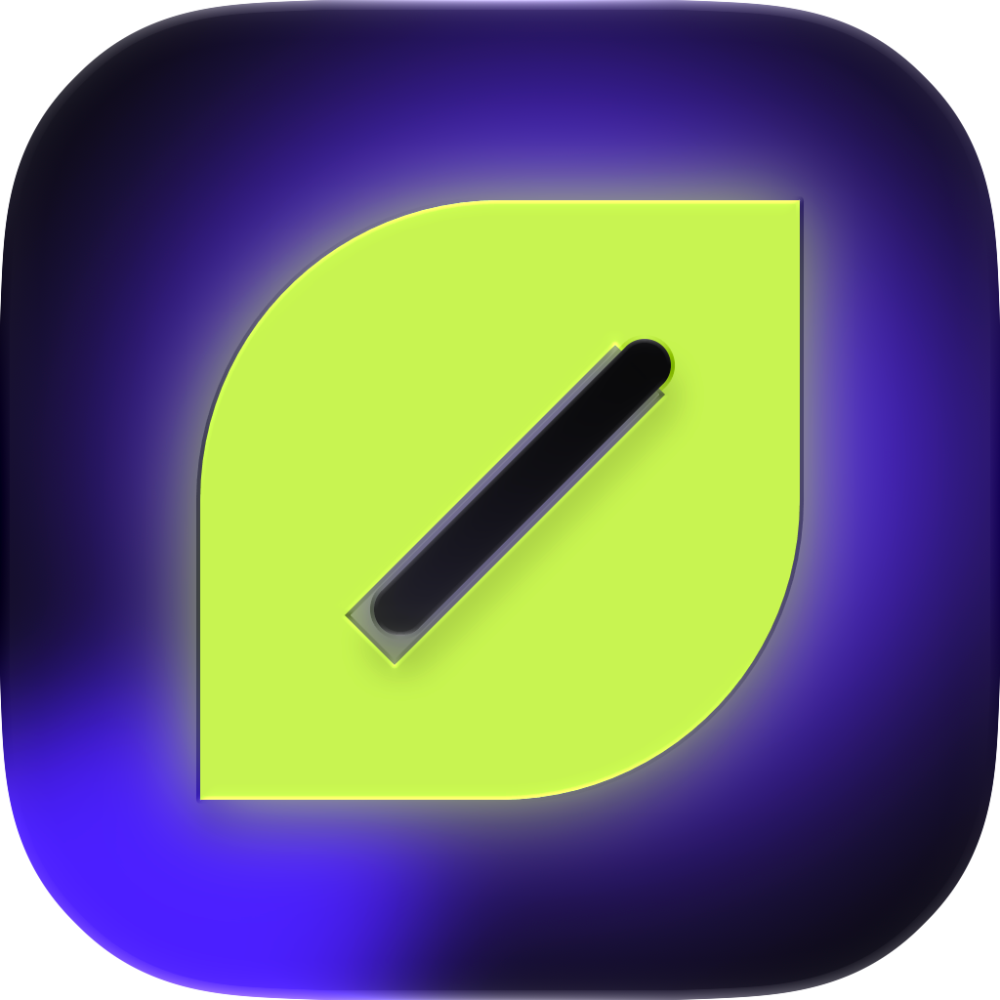
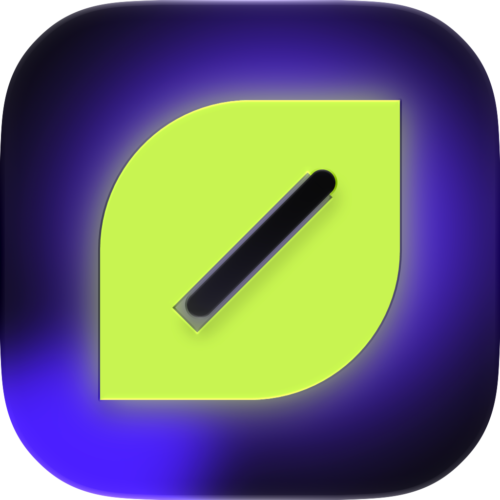

Case study/Product and UX/UI design
Designing a news app that checks first.
FreshBit went from a written plan to an app on an iPhone in about two days. This is how the problem, the research, the structure, the design system and the motion came together, and what changed after testing on a real phone.
01/Problem
Too much news, too little certainty.
Design and dev news is spread across dozens of company blogs, changelogs, press sites and community feeds. Most aggregators show everything at once: rumours next to official announcements, the same story five times, and gossip mixed in with real product news. It’s hard to tell what actually happened.
The goal: one calm feed, refreshed through the day, where every story carries a label that says how sure it is.
Constraints set on day one
No paid AI, no paid servers. It runs for $0 a month.
It started with no sign-in. Sign in with Apple came later, so saved stories follow you to iPad and Mac.
Checks every 30 minutes, publishes only when something new passes.
A coined name of 8 letters or fewer, with a free domain.
02/Research
What can a phone honestly promise?
The first question wasn’t visual. A news app can’t promise that something is true. It can say who published it and how many independent sources agree. That set the vocabulary for the whole product.
A source audit, tier by tier
Every feed was checked by hand before it was added, and each one got a trust tier. Official sources count as confirmation on their own. Press needs company. Community sites only add weight.
| Tier | What it is | Count | Examples |
|---|---|---|---|
| 1 · Official | Company blogs, changelogs, release notes | 30 | OpenAI, Google DeepMind, Figma, Apple Developer, GitHub Changelog, Material Design, WebKit |
| 2 · Established | Press and expert publications | 18 | NN/g, Smashing Magazine, UX Collective, A List Apart, The Verge, InfoQ |
| 3 · Community | Signals only, never published alone | 3 | Hacker News, Lobsters, Product Hunt |
Words matter: “Verified” became “Confirmed”
The first build labelled stories Verified. That promised more than any app can check. It was renamed Confirmed by trusted sources, which says exactly what happened: trusted sources published it.
Naming, checked live
The brief: a coined word, at most 8 letters, English, feeling “fresh, fast, curious”, with a free .app or .com domain. Two rounds explored compound names and invented words, and every domain was checked live.
FreshBit won: fresh news in small bits, with a nod to code. It’s easy to say and spell.
03/Structure
Four tabs, every screen one tap from a story.
The tab bar holds the four places people return to. Everything else is pushed on top and comes back with the back gesture. Alerts and the widget open straight into a story or the brief.
Today
- Story · brief, facts, credibility
- Your brief · from the leaf
- Search
Explore
- Topics → Search
- Trending tags → Search
- Events → Search
- This week → Story
Saved
- Story, works offline
Settings
- Keyword alerts
- Sources · mute any of 51
- Hidden stories
- Terms, Privacy, Copyright & Sources
Before the tabs: a one-step welcome that signs you in with Apple. Entry points from outside: top story, keyword and follow alerts open a Story; the morning brief alert opens Your brief.
04/Design system
Black, electric violet and lime, layered.
Content first: system type on a calm page, with three colours used together and never one alone. Black is the stage, electric violet is the atmosphere, and lime is the signal on every main control. Every text pair passes WCAG AA in light and dark.
The stage. Text on lime
Layers, glows, links on light
Every main control. 15.7:1 with black
The FreshBit layers
Covers, the icon, the welcome screens and hero areas share one stack: black underneath, violet on it as soft shapes, and a solid lime shape on top whose edge softens into the violet. Text on the layers is white Montserrat ExtraBold.
Type
Montserrat 40/800Today
title2 22/700Google DeepMind introduces Gemini 4 Hydrogen model
headline 17/600Figma introduces native 3D design tools
body 17/400Swipe a story left to hide it.
footnote 13/500Google DeepMind · 19h ago · 3 sources
Reading text uses SF Pro with Dynamic Type, so it follows the size each person sets on their iPhone. Montserrat appears only in the brand title and the large “Today”.
Spacing, radius, elevation
- Spacing scale 4, 8, 12, 16, 20, 24, 32 pt. A 16 pt screen gutter and 12 pt between cards.
- Corner radius: card 20, image 14, chips and badges fully rounded.
- No shadows in dark mode. In light mode, a 0.5 pt hairline and the softest shadow.
- Touch targets at least 44 × 44 pt.
Three rules
- Never use lime as text or thin lines on a light background (1.3:1). On lime, text is always black.
- Never flood an area with violet without black beneath it and lime on top.
- Never fade lime straight into black: it blends into the violet first.
- Never show a credibility state with colour alone: always an icon and a label.
- No emoji as icons. SF Symbols only.
05/Components
Small parts that carry trust.
These are working copies of the app’s components, in the page’s current theme.
Credibility badges
Pill, 12 pt semibold, symbol plus label. Tapping a badge in the app opens the reasons for its score.
Category chips
The dot is never alone: it always sits next to the topic name. The selected chip turns lime with black text.
Story cards and states
Compact card, the same card after it’s been read (dimmed), and the credibility meter from the story screen. Stories without an image get the FreshBit painting cover: violet layers on black with lime on top and the story’s subject in white Montserrat ExtraBold, never a broken box.
Feed markers
06/Logo
A leaf that is also a slash.
Four icon concepts, each a different construction, all tested at 16 px, in one colour and with no hidden background shape.
/ from code.Leaf Bit looked most like an app icon and stayed clear at the smallest sizes. It was rebuilt as a layered icon in Apple’s Icon Composer, a leaf layer plus a bit layer, so iOS 26 renders it with Liquid Glass. The tile is violet glowing into black, and the leaf is always lime with a black bit.


The real icon renders, from the two Icon Composer layers: the leaf with its vein cut, and the bit that sits in it.
07/Motion
Movement that explains, then gets out of the way.
Each motion answers a question: did my tap land, where did the header go, what just arrived. With Reduce Motion on, all three turn into short fades.
Expo Simulators
Expo Blog · 2h agoPress feedback
Cards scale to 0.98 over 120 ms with an ease-out, plus a light haptic on save. No layout change.
The folding header
The title folds into a Liquid Glass leaf. Tap it and it morphs into a compact bar. In the app, SwiftUI draws the morph, so it follows Apple’s own springs.
New stories arrive
A pill slides down from the top. Tapping it scrolls up and shows them. The feed never jumps on its own.
08/Iteration
Tested on a real iPhone, fixed from screen recordings.
The app was installed through TestFlight and reviewed from screen recordings of real use. FreshBit went through 11 TestFlight builds during the project. The biggest changes:
- The folding header went native.It started as a bouncing custom animation. It now uses Apple’s Liquid Glass morph, so it feels like the system.
- The tab bar shrinks to the corner.The feed was rebuilt so iOS can follow its scrolling and minimise the tab bar like Apple’s own apps.
- Settings rows line up like iOS Settings.Pickers were moved to SwiftUI’s own labelled rows: label on the left, choice on the right.
- “Verified” became “Confirmed by trusted sources”.To be precise about what the app can and can’t promise.
- Lime stopped being text on glass.Lime on the light tab bar measured about 1.2:1. Light mode now tints the selected tab in electric violet (6.5:1).
- Own words, by design.In the UK even a headline can be protected by copyright, and photos are not covered by the news-reporting exception. So FreshBit now writes every headline, summary and brief itself, shows only images a publisher offers in its feed or that carry an open licence, with a credit, and otherwise draws its own cover with the story’s subject in the brand font.
- Widgets and a Mac app.A Home Screen and Lock Screen widget with the most-confirmed stories, and a native Mac app with the top stories in the menu bar.
09/Build
Designed and built end to end.
FreshBit was built with AI-assisted development, starting from a written plan with a zero-cost version, then in phases: brand, logo, design system, backend, app, then feedback rounds.
Expo SDK 58, React Native, Expo Router with native tabs, and native SwiftUI components through @expo/ui.
Supabase on the free plan: Postgres with row-level security, Edge Functions and scheduled jobs.
Rare-word matching plus free meaning search with vector embeddings. No paid AI anywhere.
Also built: a branded share card, haptics throughout, offline saved stories, iPad and Mac layouts with a comfortable reading width, a Home Screen and Lock Screen widget, and a native Mac app with a menu bar view of the top stories.